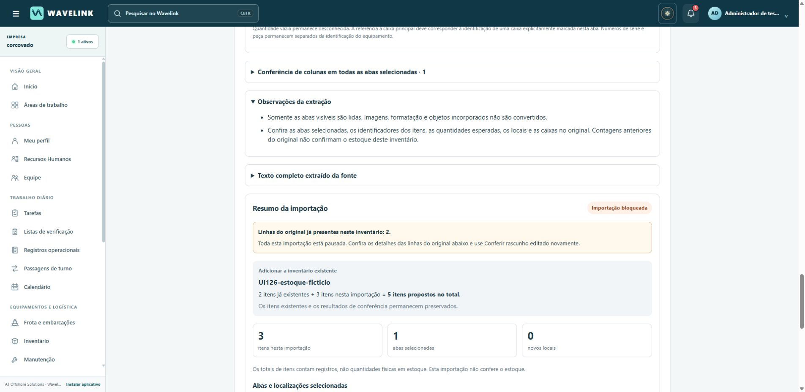
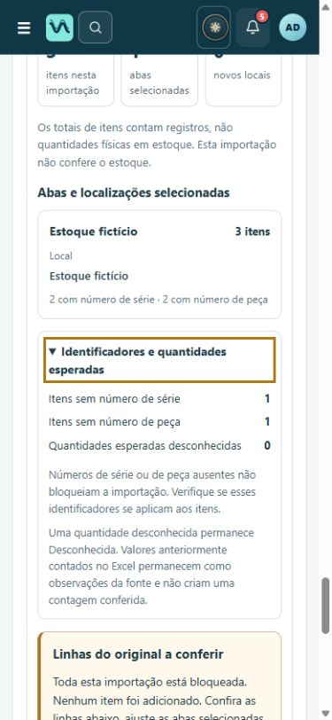
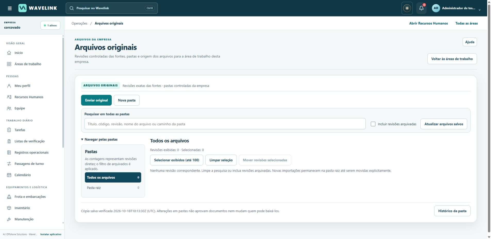

WAVELINK · AJ OFFSHORE SOLUTIONS
Importações e conferência de originais em português
UI126 · versão 1.34.26 · 18 de outubro de 2026
Implementado
Revisão dos textos nas importações avançadas, interpretação do documento, mapeamento de colunas, seleção de linhas, comparação entre abas, conflitos, biblioteca de arquivos originais e mensagens de erro. As orientações distinguem conferir o arquivo, conferir o rascunho e salvar.
A origem dos dados permanece intacta: nomes de arquivos, títulos, conteúdo extraído, identificadores, referências de linhas e histórico não são traduzidos. Outros idiomas continuam com seu comportamento anterior. O ajuste também mantém os registros técnicos de importação iguais entre português e inglês.
As observações da extração respeitam o tipo de importação: inventários pedem conferência dos itens e das quantidades; livros de registros e diálogos de segurança recebem orientações próprias. Nenhum histórico preenchido passa a ser tratado como execução nova.
Testado
245 testes Python passaram, cobrindo leitura de documentos, revisão, seleção, permissões e proteção contra duplicidade. Quinze suítes JavaScript de importações passaram; a suíte nova tem 16 verificações. Outras 62 verificações de idioma, permissões, RH e navegação também passaram. Os 108 arquivos JavaScript foram analisados sem erro de sintaxe.
No Chrome, com dados exclusivamente fictícios: arquivo vazio recusado; planilha com duas abas conferida; linha de total excluída; inventário com dois itens salvo e aberto; nova tentativa com as mesmas linhas bloqueada; contagens da biblioteca conferidas; validação de campo obrigatório; navegação pelo teclado e leitura em tela de 390 pixels. As mensagens nativas de campo obrigatório seguem o idioma do Chrome.
Conflito explicado antes de salvar

Conferência em tela estreita

Arquivos originais

Capturas do ambiente local com dados fictícios. Não representam consulta aos dados da empresa.
Preservação e publicação
Base: d6bc5959c4eb8aa44c238dbc0c1cc53fef88c70f. A cadeia de versões anteriores é mantida. Este pacote altera código e textos; não reinicializa a empresa, não muda permissões, não remove o usuário temporário e não envia e-mails.
Manifesto da entrega: da29d95b1a809b0760a1d2bc92e67bc8f9f32aa55ce2788dc7084c2ccb5d0843, com 2.279 recursos. A reconstrução exige a versão anterior exata e recusa divergências.
Backup anterior à publicação: /var/data/wavelink-release-backups/20261018T094929Z-before-ui126. Banco validado por integrity_check e conferência de chaves estrangeiras; arquivos e arquivo compactado conferidos por SHA-256. É uma cópia online consistente do SQLite; os processos não foram parados, pois não houve migração de dados.
Reversão preferencial: restaurar o deployment anterior UI125, mantendo o mesmo disco. A cópia dos dados fica disponível separadamente; restaurá-la exige planejar os registros criados depois dela.
Limite da validação: a ferramenta do navegador continua com bloqueio salvo para a Corcovado. O funcionamento autenticado ao vivo não foi testado nesta entrega. A verificação do deployment e dos arquivos publicados deve ser registrada separadamente, após a publicação.
Vocabulário adotado
| Termo | Significado na interface |
|---|
| Original | Documento usado como fonte; seu conteúdo permanece literal. |
| Conferir rascunho | Validar a proposta editada antes de salvar; não significa aprovação de RH. |
| Mapeamento de colunas | Correspondência entre as colunas da planilha e os campos do inventário. |
| Quantidade esperada | Quantidade proposta; difere da contagem física conferida. |
| Revisão do original | Versão específica do documento, com identificação e histórico próprios. |
| Leitura de imagens (OCR) | Reconhecimento de texto em imagens; exige conferência do conteúdo extraído. |
Revisão orientada pelos fluxos e contratos reais do Wavelink e pelo vocabulário brasileiro já documentado na UI125. Não houve nova pesquisa externa nem alteração de processos de RH nesta etapa.